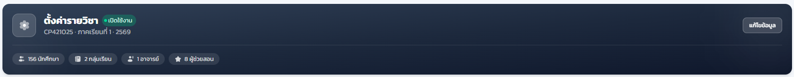
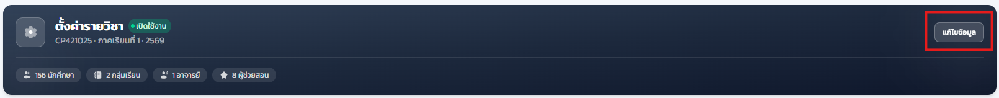
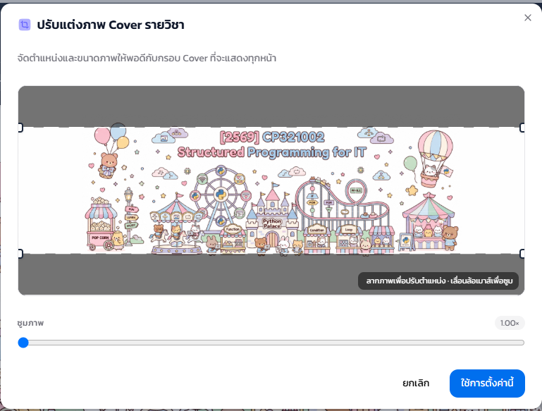
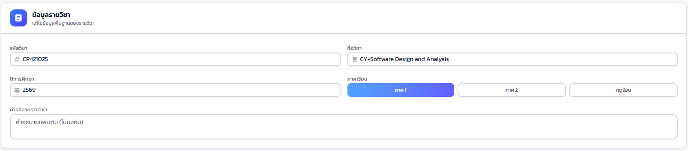
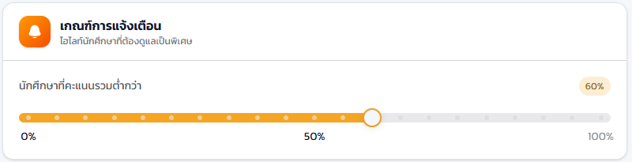
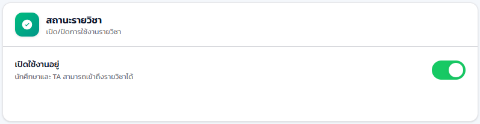

14.1 ภาพรวมหน้าตั้งค่ารายวิชา#
เป้าหมายของขั้นตอนนี้ ให้ท่านจัดการข้อมูลพื้นฐานและรูปลักษณ์ของรายวิชาในที่เดียว เมนูอยู่ที่ ตั้งค่ารายวิชา > ตั้งค่ารายวิชา
- แถบสรุปด้านบน
- จำนวนนักศึกษา กลุ่มเรียน อาจารย์ และผู้ช่วยสอนในรายวิชานี้

14.2 แก้ไขข้อมูลรายวิชา#
เป้าหมายของขั้นตอนนี้ ให้ท่านปรับรูปปกและข้อมูลพื้นฐานของรายวิชาให้ตรงกับความเป็นจริงของภาคเรียนปัจจุบัน
- คลิกปุ่ม แก้ไขข้อมูล เพื่อเปิดโหมดแก้ไข
- ในส่วน รูปปกรายวิชา เลือกเปลี่ยนรูป ปรับตำแหน่ง หรือลบรูปปกได้ตามต้องการ
- ในส่วน ข้อมูลรายวิชา แก้ไขรหัสวิชา ชื่อวิชา ปีการศึกษา และภาคเรียนให้ถูกต้อง



14.3 เกณฑ์การแจ้งเตือน#
เป้าหมายของขั้นตอนนี้ ให้ระบบช่วยเน้นนักศึกษาที่มีคะแนนต่ำกว่าเกณฑ์ที่ท่านกำหนด เพื่อให้ท่านติดตามและช่วยเหลือได้ทันก่อนปิดเทอม
- เลื่อนแถบ เกณฑ์การแจ้งเตือน เพื่อกำหนดเปอร์เซ็นต์คะแนนขั้นต่ำที่ต้องการให้ระบบจับตา
- บันทึกการตั้งค่า

เมื่อบันทึกเกณฑ์แล้ว นักศึกษาที่มีคะแนนต่ำกว่าเปอร์เซ็นต์ที่กำหนดจะถูกเน้นให้เห็นในหน้ารายชื่อและรายงานที่เกี่ยวข้อง ช่วยให้ท่านและผู้ช่วยสอนตามงานได้ง่ายขึ้นโดยไม่ต้องไล่ดูคะแนนทีละคน
14.4 เปิด/ปิดการเข้าถึงรายวิชา#
เป้าหมายของขั้นตอนนี้ ให้ท่านควบคุมว่านักศึกษาและผู้ช่วยสอนสามารถเข้าถึงรายวิชานี้ได้ในปัจจุบันหรือไม่ เช่น เมื่อปิดเทอมแล้วต้องการปิดการเข้าถึงชั่วคราว
- เปิดหรือปิดสวิตช์ สถานะรายวิชา (เปิดใช้งาน/ปิดใช้งาน) ตามต้องการ

เมื่อปิดใช้งานรายวิชา นักศึกษาและผู้ช่วยสอนทุกคนจะไม่สามารถเข้าถึงรายวิชานี้ได้ทันที กรุณาตรวจสอบให้แน่ใจก่อนปิดใช้งาน โดยเฉพาะระหว่างภาคเรียนที่ยังมีการเรียนการสอนอยู่